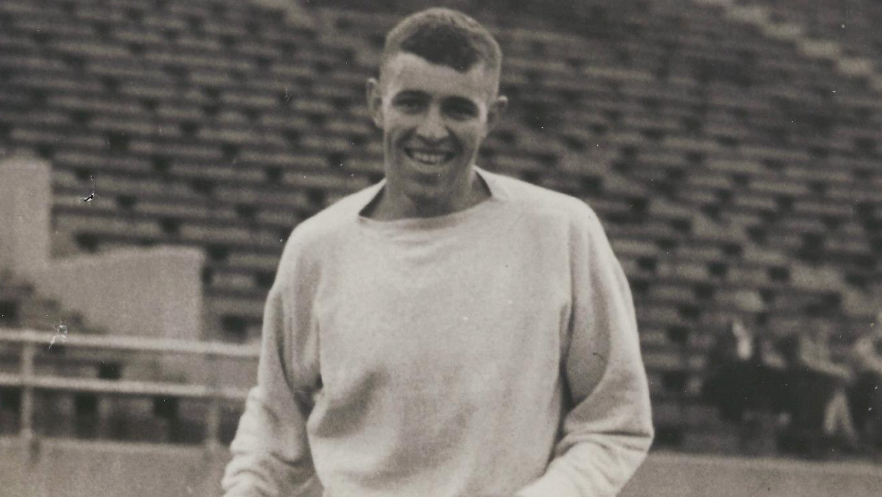

A growing archive of Worthington and Thomas Worthington track & field: the records, the all-time lists, the coaches, and the stories behind them, from 1926 to today.


.webp)

 All-Time Lists
The best performances in program history
Top marks in 83 boys and girls event lists, sortable and searchable.
Open the lists
All-Time Lists
The best performances in program history
Top marks in 83 boys and girls event lists, sortable and searchable.
Open the lists
 Records
School Records
Record holders, boys and girls, in every event.
Records
School Records
Record holders, boys and girls, in every event.

Coaches Coaches Through the Years Every head coach since 1926, with their stories. Gallery
Photo Gallery
Team photos, coaches, and race-day moments from the 1950s on.
Gallery
Photo Gallery
Team photos, coaches, and race-day moments from the 1950s on.
 The Greatest Race
Four girls, one state final, and a finish decided by five hundredths of a second.
The Greatest Race
Four girls, one state final, and a finish decided by five hundredths of a second.
 Here Ends His Long Walk
A 25-man team, one remarkable season, and the lives its athletes went on to lead.
Here Ends His Long Walk
A 25-man team, one remarkable season, and the lives its athletes went on to lead.
 Tops in the County
The Franklin County league, and the year Worthington finished on top of it.
Tops in the County
The Franklin County league, and the year Worthington finished on top of it.
These sections are on the way. Check back as the archive grows.

Have a photo of a Cardinal athlete, coach, or team? Send it in and it may be added to the records, the gallery, or a coach’s page.
Submit a Photo